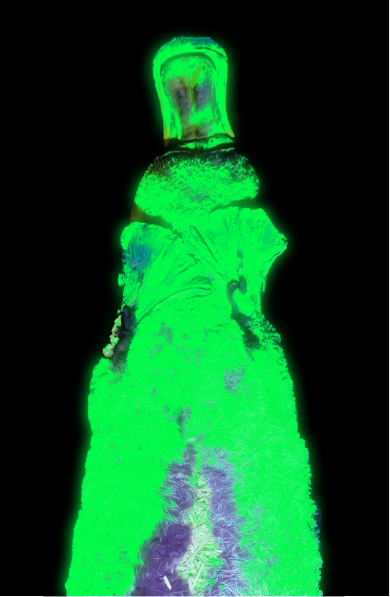
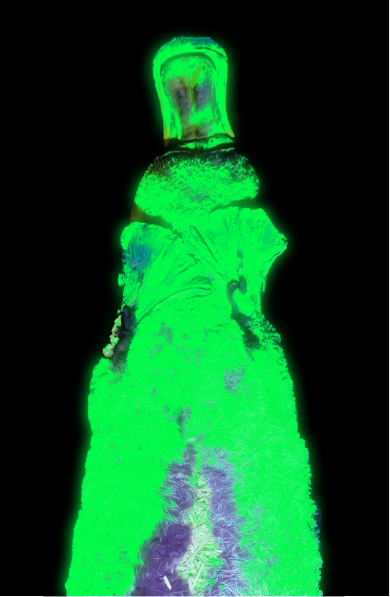
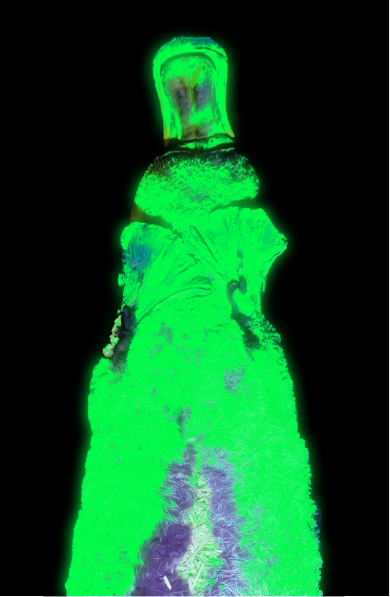

According to new research published in the scientific journal Mammalia, platypus fur glows bluish-green under ultraviolet light. Platypuses glow because of biofluorescence. The scientists arent exactly sure why platypus pelts are biofluorescent.
